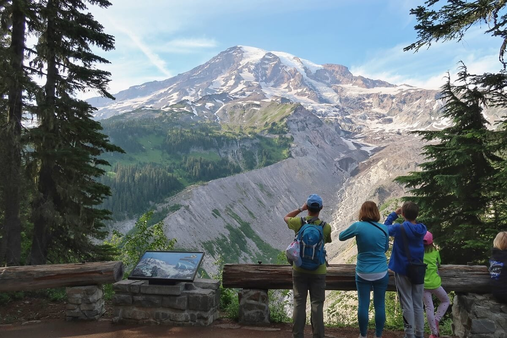
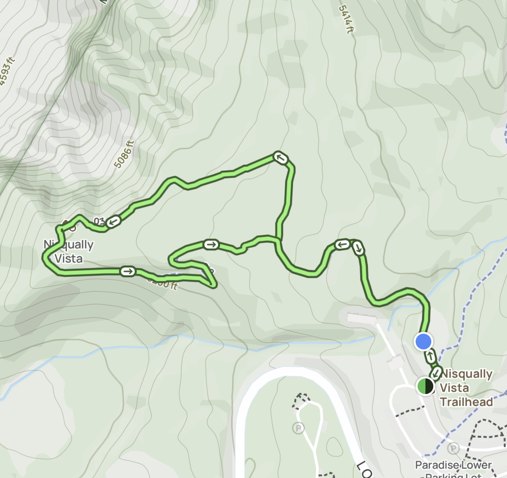

Nisqually Vista Trail
General Information:
- Location: Mount Rainier National Park
- Difficulty: Easy
- Trail Type: Loop
- Distance: 1.2 miles
- Estimated Time: 45–60 minutes
- Elevation Gain: Approximately 200 feet
- Parking: Paradise parking lot
- Entrance Fee: National Park entrance fee required
- Pets: Not allowed
- Scenery: Mount Rainier, Nisqually Glacier, and alpine meadows